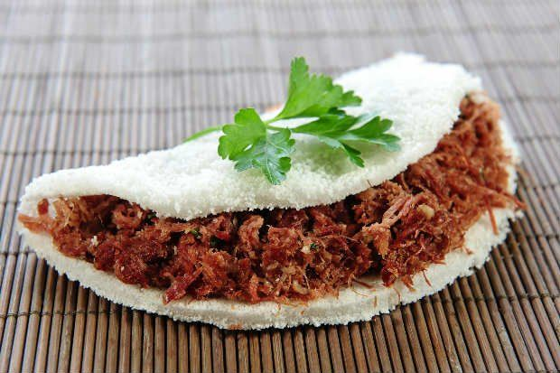

Cuscuz Nordestino

O cuscuz tem raízes africanas e indígenas. Feito com flocos de milho cozidos no vapor, é servido com manteiga, ovos ou carne seca.
Tapioca
Com origem indígena, a tapioca é feita da goma da mandioca. Pode ser recheada com coco, queijo, presunto ou leite condensado.